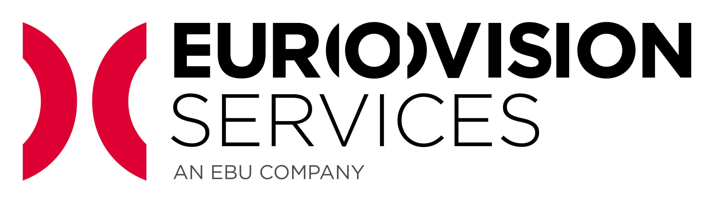

<div class="fixed-top">
  <div class="collapse" id="navbarToggleExternalContent">
    <div class="bg-dark p-4">
      <h5 class="text-white h4">Collapsed content</h5>
      <span class="text-muted">Toggleable via the navbar brand.</span>
    </div>
  </div>
  <nav class="navbar navbar-transparent bg-transparent">
    <button class="navbar-toggler" type="button" data-toggle="collapse" data-target="#navbarToggleExternalContent" aria-controls="navbarToggleExternalContent" aria-expanded="false" aria-label="Toggle navigation">
      Menu
    </button>
  </nav>
</div>
<div class="container home-container" id="logo-container">
  
</div>

<div>
  <router-outlet></router-outlet>
</div>


